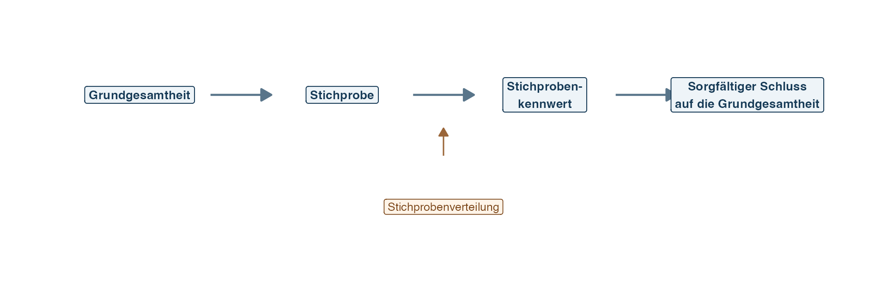
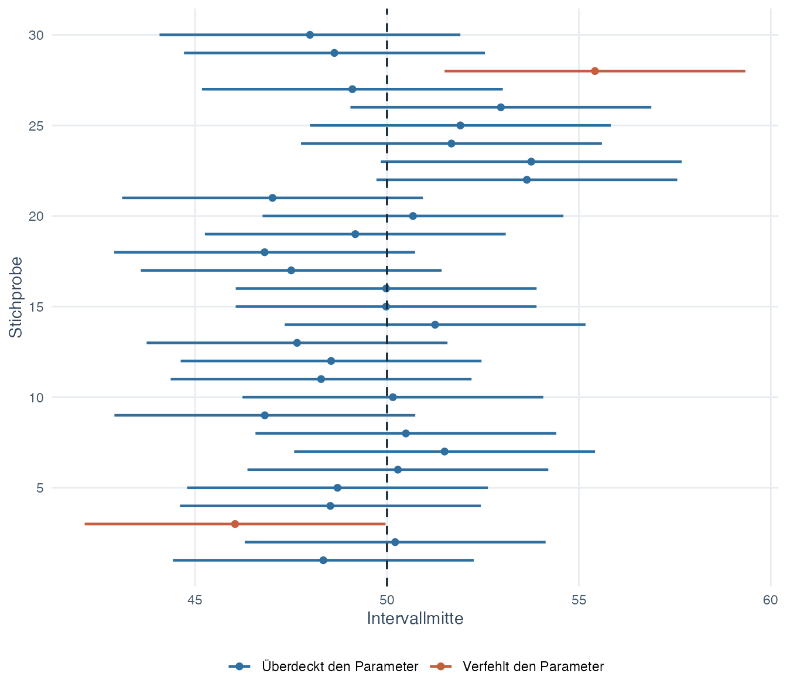
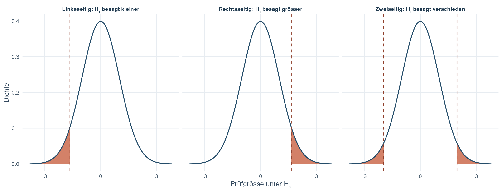
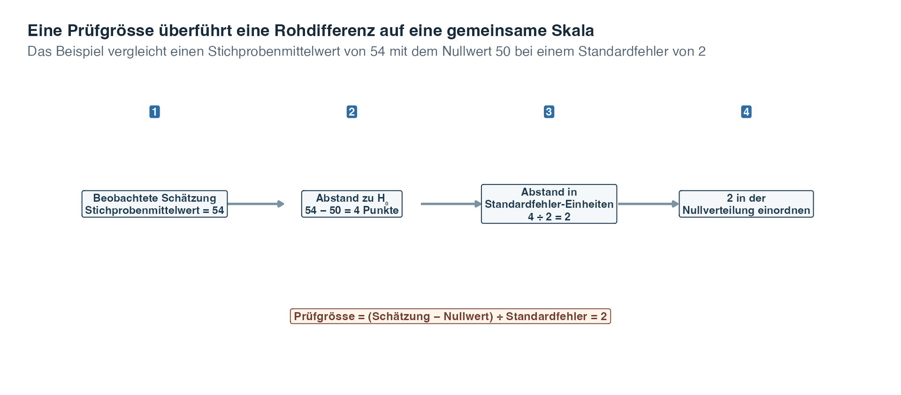
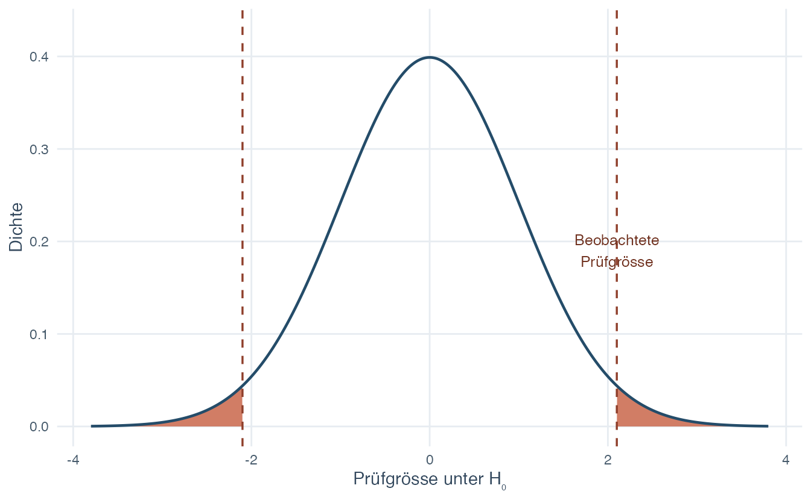
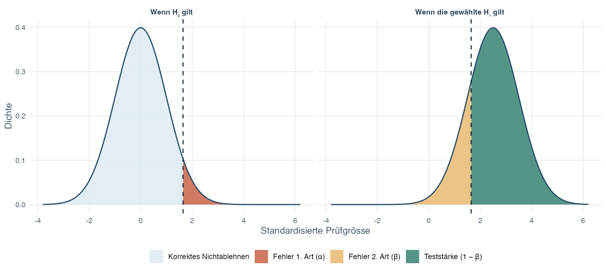
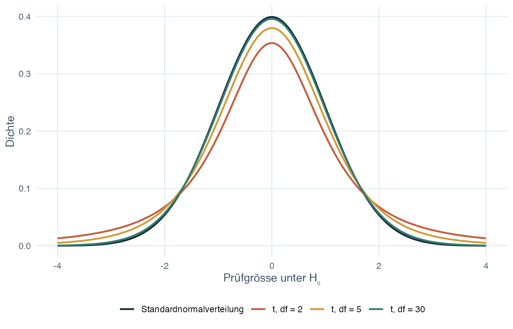
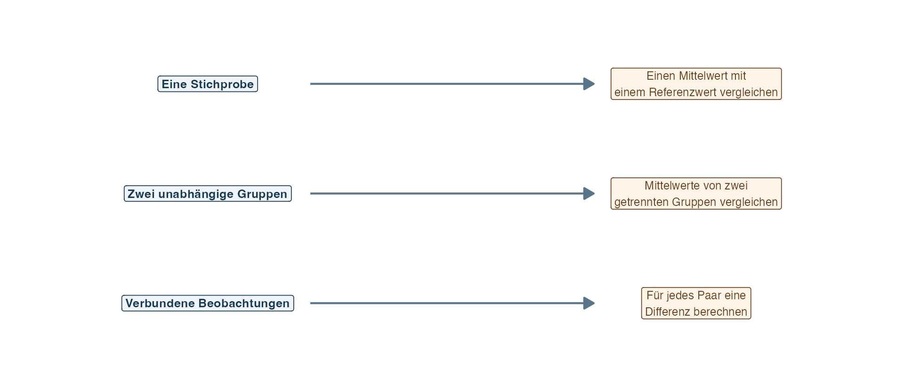

Übungsblatt
Wähle PDF zum Drucken oder Word zum Bearbeiten.
Einführung in die Statistik · Thema 3
Die Themen 1 und 2 haben zwei Seiten desselben Problems vorbereitet. Thema 1 zeigte, wie wir die vorliegende Stichprobe beschreiben. Thema 2 zeigte, dass sich ein Stichprobenkennwert wie der Stichprobenmittelwert verändert, wenn eine neue Zufallsstichprobe gezogen wird. Nun können wir beide Ideen zusammenführen und fragen, was uns eine beobachtete Stichprobe über eine grössere Grundgesamtheit sagen kann.
Stell dir vor, eine Stichprobe hat einen mittleren Planungswert von 54, während ein Referenzwert bei 50 liegt. Die Differenz von vier Punkten ist leicht zu berechnen. Interessanter ist jedoch die Frage, was sie bedeutet: Zeigt die Stichprobe einen Unterschied in der Grundgesamtheit, oder könnte die gewöhnliche Schwankung von Stichprobe zu Stichprobe eine so grosse Differenz hervorgebracht haben? Diese Schwankung ist keine Störung, die wir verbergen müssten. Sie liefert uns vielmehr die Information, mit der wir beurteilen können, wie viel Unsicherheit das Ergebnis umgibt.
Statistische Inferenz ist der Prozess, bei dem wir eine Stichprobe verwenden, um sorgfältig über eine Grundgesamtheit nachzudenken. Eine Inferenz macht aus einem Stichprobenergebnis keine Gewissheit. Sie verbindet das Ergebnis mit einem Wahrscheinlichkeitsmodell, dem Studiendesign und klar benannten Annahmen.
Dieses Thema entwickelt zwei eng verwandte Werkzeuge, die diese Unsicherheit sichtbar halten. Ein Konfidenzintervall gibt einen Bereich von Parameterwerten an, die mit der Schätzung und ihrer Unsicherheit vereinbar sind. Ein Hypothesentest fragt, ob das Stichprobenergebnis unter einem festgelegten Modell ungewöhnlich weit von einem bestimmten Wert der Grundgesamtheit entfernt wäre. Beide Werkzeuge beruhen auf den Stichprobenverteilungen aus Thema 2. Beide helfen uns, von der Beschreibung einer Stichprobe zu einer sorgfältigen und begrenzten Aussage über die Grundgesamtheit überzugehen.
Leitfrage: Wie kann uns eine Stichprobe etwas über eine Grundgesamtheit zeigen, ohne die Unsicherheit zu verschweigen?
Inferenz ist kein Sprung von einer Stichprobe zu einer garantierten Wahrheit. Sie ist eine strukturierte Argumentation, in der die Unsicherheit sichtbar bleibt.
Nach Abschluss dieses Themas solltest du:
Eine Grundgesamtheit ist die gesamte Gruppe, auf die sich eine Frage bezieht. Ein Parameter ist eine zahlenmässige Eigenschaft dieser Grundgesamtheit, etwa ihr Mittelwert \(\mu\). Parameter sind in der Regel unbekannt.
Eine Stichprobe ist die beobachtete Teilmenge. Ein Stichprobenkennwert ist eine aus der Stichprobe berechnete Zahl, etwa der Stichprobenmittelwert \(\bar{x}\). Ein Schätzer ist die Rechenregel, mit der ein Stichprobenkennwert zur Schätzung eines Parameters bestimmt wird. Der Stichprobenmittelwert ist beispielsweise ein Schätzer des Mittelwerts der Grundgesamtheit.

Folge der oberen Zeile von links nach rechts. Die Grundgesamtheit ist die Gruppe, die wir letztlich verstehen möchten, beobachten können wir aber nur eine Stichprobe. Aus dieser Stichprobe entsteht ein Kennwert, der einen vorsichtigen Schluss auf die Grundgesamtheit ermöglicht. Die Stichprobenverteilung steht darunter, weil sie das fehlende Bindeglied liefert: Sie zeigt, wie stark der Kennwert schwanken würde, wenn der Stichprobenprozess wiederholt würde. Ohne diese Schwankung hätte der Schritt von einer einzelnen Stichprobenzahl zurück zu einer Aussage über die Grundgesamtheit kein Mass für seine Unsicherheit.
| Objekt | Beispiel für einen Mittelwert | Was es beschreibt |
|---|---|---|
| Parameter der Grundgesamtheit | \(\mu\) | Der unbekannte Mittelwert der Grundgesamtheit |
| Stichprobenkennwert | \(\bar{x}\) | Der aus der beobachteten Stichprobe berechnete Mittelwert |
| Standardabweichung | \(s\) | Die Streuung einzelner beobachteter Werte |
| Geschätzter Standardfehler | \(s/\sqrt{n}\) | Die geschätzte Streuung von Stichprobenmittelwerten bei wiederholten Stichproben |
Der Standardfehler ist das Bindeglied in der Abbildung. Er zeigt, wie stark ein Schätzer bei wiederholten Zufallsstichproben unter dem Modell normalerweise schwanken würde. Zuerst nutzen wir diese Information, um ein Intervall um eine Schätzung zu bilden.
Eine Punktschätzung ist eine einzelne numerische Schätzung eines Parameters. So ist beispielsweise \(\bar{x}=52\) eine Punktschätzung von \(\mu\). Eine einzelne Zahl zeigt jedoch nicht, wie präzise diese Schätzung ist.
Ein Konfidenzintervall ergänzt die Punktschätzung um eine untere und eine obere Grenze. Sein Konfidenzniveau beschreibt die langfristige Erfolgsrate der Methode, mit der solche Intervalle gebildet werden. Ein 95%-Konfidenzverfahren ist so angelegt, dass bei vielen Wiederholungen desselben Stichprobenprozesses ungefähr 95% der berechneten Intervalle den festen Parameter der Grundgesamtheit überdecken und ungefähr 5% ihn verfehlen.
Die meisten hier eingeführten Konfidenzintervalle folgen einer einfachen Struktur:
\[ \text{Punktschätzung} \ \pm\ \text{kritischer Wert}\times\text{Standardfehler}. \]
Die Punktschätzung legt die Mitte des Intervalls fest. Der kritische Wert bestimmt, wie viele Standardfehler sich das Verfahren auf beiden Seiten erstreckt, und der Standardfehler enthält die Information über die Stichprobenunsicherheit. Das Produkt aus kritischem Wert und Standardfehler heisst Fehlerspanne. Du musst nicht sofort jede Intervallformel auswendig lernen. Erkenne zunächst diese drei Bestandteile und verstehe, welchen Beitrag jeder von ihnen leistet.

Lies die Abbildung zeilenweise. Jeder Punkt ist der Mittelwert einer anderen Stichprobe, und jede horizontale Strecke ist das Konfidenzintervall um diesen Stichprobenmittelwert. Die vertikale Linie markiert den einen Mittelwert der Grundgesamtheit, den alle Stichproben zu schätzen versuchen. Die blauen Intervalle schneiden diese feste Linie und überdecken damit den Parameter, während die orangefarbenen Intervalle ihn verfehlen. Die Abbildung zeigt nur 30 Wiederholungen und veranschaulicht deshalb lediglich die langfristige Idee. Ein 95%-Verfahren muss nicht in jeder kleinen Gruppe von Stichproben genau 95% der Intervalle erfolgreich überdecken.
Sobald ein einzelnes Intervall berechnet wurde, sind seine Grenzen fest, und auch der Parameter ist fest. Deshalb sagen wir nicht, der Parameter liege nun mit einer Wahrscheinlichkeit von 95% in diesem bereits berechneten Intervall. Die 95% beschreiben das Verfahren über viele Wiederholungen hinweg.
Drei Bestandteile bestimmen die Breite eines Intervalls:
Ein schmales Intervall bedeutet unter dem Stichprobenmodell eine höhere Präzision. Es behebt jedoch weder verzerrte Messungen noch selektive Stichproben oder ein ungeeignetes Studiendesign.
Mit demselben Stichprobenmodell können wir auch einen bestimmten vorgeschlagenen Wert prüfen. Das ist die Aufgabe eines Hypothesentests.
Eine statistische Hypothese ist eine Aussage über einen Parameter der Grundgesamtheit. Dabei werden zwei Aussagen gemeinsam betrachtet:
Nehmen wir an, \(\mu_0\) ist ein Referenzmittelwert und \(\mu\) der untersuchte Mittelwert der Grundgesamtheit. Die Form von \(H_1\) bestimmt, welche Stichprobenergebnisse als Evidenz gegen \(H_0\) gelten.
| Forschungsfrage | Nullhypothese | Alternativhypothese | Testrichtung |
|---|---|---|---|
| Ist der Mittelwert grösser? | \(H_0:\mu=\mu_0\) | \(H_1:\mu>\mu_0\) | Rechtsseitig |
| Ist der Mittelwert kleiner? | \(H_0:\mu=\mu_0\) | \(H_1:\mu<\mu_0\) | Linksseitig |
| Ist der Mittelwert verschieden? | \(H_0:\mu=\mu_0\) | \(H_1:\mu\ne\mu_0\) | Zweiseitig |
Ein Verteilungsschwanz ist ein Ende einer Wahrscheinlichkeitsverteilung. Das Signifikanzniveau, geschrieben als \(\alpha\) (Alpha), ist die gesamte Wahrscheinlichkeit, die Ergebnissen zugeordnet wird, welche die Entscheidungsregel bei wahrem \(H_0\) als ausreichend unvereinbar mit \(H_0\) behandelt. Die Menge dieser Ergebnisse heisst Ablehnungsbereich. Hier wird häufig \(\alpha=0.05\) gewählt. Bei einem rechtsseitigen Test liegt der Ablehnungsbereich am oberen Ende, bei einem linksseitigen Test am unteren Ende. Ein zweiseitiger Test verteilt das gewählte Signifikanzniveau auf beide Enden. Der nächste Abschnitt erklärt, weshalb \(\alpha\) zugleich die langfristige Wahrscheinlichkeit eines Fehlers 1. Art ist.

Die drei Felder verwenden dasselbe gesamte Signifikanzniveau, platzieren es jedoch unterschiedlich. Im linksseitigen Feld sprechen nur ungewöhnlich kleine Kennwerte gegen \(H_0\). Im rechtsseitigen Feld tun dies nur ungewöhnlich grosse Kennwerte. Im zweiseitigen Feld zählen ungewöhnliche Ergebnisse in beiden Richtungen, weshalb die Hälfte von \(\alpha\) in jedem Verteilungsschwanz liegt. Das nicht schattierte Zentrum enthält Ergebnisse, bei denen die Regel \(H_0\) nicht ablehnt. Es ist kein Beweis dafür, dass \(H_0\) richtig ist.
Die Richtung muss durch die Forschungsfrage begründet und festgelegt werden, bevor die Daten betrachtet werden. Einen einseitigen Test erst nach dem Betrachten der Richtung des Stichprobenergebnisses zu wählen, würde das gewählte Signifikanzniveau ungültig machen.
Ein Hypothesentest verwendet eine Stichprobe, um zwischen zwei Handlungen zu wählen: \(H_0\) ablehnen oder \(H_0\) nicht ablehnen. Nicht ablehnen bedeutet, dass die Stichprobe unter der gewählten Regel keine ausreichend ungewöhnliche Evidenz geliefert hat. Es beweist nicht, dass \(H_0\) wahr ist.
Weil die Entscheidung auf einer Stichprobe beruht, kann sie falsch sein:
| Was in der Grundgesamtheit gilt | \(H_0\) nicht ablehnen | \(H_0\) ablehnen |
|---|---|---|
| \(H_0\) ist wahr | Korrektes Nichtablehnen | Fehler 1. Art |
| Das festgelegte \(H_1\) ist wahr | Fehler 2. Art | Korrekte Ablehnung |
Lies die Zeilen als unbekannte Wirklichkeit in der Grundgesamtheit und die Spalten als Handlung, die aufgrund der Stichprobe erfolgt. Ist \(H_0\) wahr, erzeugt eine Ablehnung einen Fehler 1. Art. Ist die festgelegte Alternative wahr, erzeugt das Nichtablehnen einen Fehler 2. Art. Die beiden Zellen auf der Diagonale sind korrekte Entscheidungen. Unter einer festgelegten Alternative heisst die langfristige Wahrscheinlichkeit der korrekten Ablehnung unten rechts Teststärke.
Ein Fehler 1. Art liegt vor, wenn das Verfahren \(H_0\) ablehnt, obwohl \(H_0\) wahr ist. Seine langfristige Wahrscheinlichkeit entspricht dem zuvor eingeführten Signifikanzniveau \(\alpha\).
Ein Fehler 2. Art liegt vor, wenn das Verfahren \(H_0\) nicht ablehnt, obwohl die festgelegte Alternative wahr ist. Seine Wahrscheinlichkeit wird mit \(\beta\) (Beta) bezeichnet. Welche Folgen die beiden Fehler haben, hängt vom Forschungskontext ab. Keiner der beiden Fehler ist automatisch der eher akzeptable.
Betrachte eine Studie zu einem tatsächlich hilfreichen Lernprogramm. Ein Fehler 1. Art würde dazu führen, das Programm zu empfehlen, obwohl es den Mittelwert der Grundgesamtheit nicht verbessert. Zeit und Mittel könnten also ohne Nutzen eingesetzt werden. Ein Fehler 2. Art würde eine echte Verbesserung übersehen und das bestehende Programm unverändert lassen. An diesen Folgen zeigt sich, weshalb Fehlerwahrscheinlichkeiten mitentscheiden, wie vorsichtig die Testregel sein sollte und wie viele Daten eine Studie benötigt.
Das Signifikanzniveau wird gewählt, bevor das Ergebnis betrachtet wird. Unter den Annahmen ist es eine Eigenschaft des Verfahrens und nicht die Wahrscheinlichkeit, dass diese konkrete Entscheidung falsch ist.
Eine Teststatistik oder Prüfgrösse ist eine standardisierte Zahl, die aus der Stichprobe berechnet wird. Sie vergleicht die beobachtete Abweichung mit der Menge an Stichprobenschwankung, die unter \(H_0\) erwartet wird. Das allgemeine Muster lautet:
\[ \text{Teststatistik} = \frac{\text{beobachtete Schätzung}-\text{von }H_0\text{ festgelegter Wert}} {\text{Standardfehler der Schätzung}}. \]
Der Zähler ist der beobachtete Abstand vom Nullwert in der ursprünglichen Masseinheit der Variablen. Der Nenner beschreibt, wie stark die Schätzung unter dem Modell gewöhnlich von Stichprobe zu Stichprobe schwankt. Wenn wir den Zähler durch den Nenner teilen, beantworten wir eine einfache Frage: Wie viele Standardfehler liegt diese Schätzung vom Nullwert entfernt?

Lies die Kästen von links nach rechts. Der erste Kasten enthält die beobachtete Schätzung. Im zweiten wird der von \(H_0\) vorgeschlagene Wert abgezogen, sodass ein ursprünglicher Abstand von 4 Punkten entsteht. Im dritten wird dieser Abstand durch den Standardfehler 2 geteilt. Daraus ergibt sich die Prüfgrösse 2. Der letzte Kasten erinnert daran, dass diese Zahl erst dann als Evidenz eingeordnet werden kann, wenn wir sie in der passenden Nullverteilung betrachten.
Das Diagramm verbindet die Formel mit ihrer Bedeutung: Eine Prüfgrösse von 2 besagt, dass die Schätzung zwei Standardfehler vom Nullwert entfernt liegt. Sie besagt nicht, dass der Effekt 2 Punkte beträgt, denn der ursprüngliche Abstand von vier Punkten und der standardisierte Wert beantworten verschiedene Fragen. Die Prüfgrösse allein ist auch noch kein p-Wert. Erst die Nullverteilung, die Richtung von \(H_1\) und das vorab festgelegte Signifikanzniveau bestimmen, welche Werte als ausreichend ungewöhnlich gelten.
Die Nullverteilung ist die Wahrscheinlichkeitsverteilung der Teststatistik, wenn \(H_0\) und die Modellannahmen gelten. Sie zeigt, welche Werte unter der Referenzaussage gewöhnlich und welche ungewöhnlich sind.
Nach der Wahl von \(\alpha\) enthält der Ablehnungsbereich jene Werte der Teststatistik, bei denen \(H_0\) abgelehnt wird. Ein kritischer Wert bildet eine Grenze dieses Bereichs. Die Logik folgt immer derselben Reihenfolge:
Ein Ergebnis heisst auf dem Niveau \(\alpha\) statistisch signifikant, wenn das Verfahren \(H_0\) ablehnt. Dieser Ausdruck bezieht sich auf die Testregel. Er besagt nicht, dass der Effekt gross oder wichtig ist.
Ein p-Wert ist die unter \(H_0\) berechnete Wahrscheinlichkeit, die beobachtete Teststatistik oder einen in der durch \(H_1\) festgelegten Richtung noch extremeren Wert zu erhalten. Bei einem zweiseitigen Test zählen gleich extreme Werte in beiden Richtungen.

Die Kurve zeigt Werte der Teststatistik, die unter \(H_0\) erwartet werden. Null liegt in der Mitte, weil dieses standardisierte Nullmodell keine Abweichung vom Nullwert erwartet. Die beobachtete Teststatistik beträgt \(2.10\), und bei einer zweiseitigen Frage liegt \(-2.10\) gleich weit von null entfernt. Die beiden schattierten Verteilungsschwänze enthalten daher alle Ergebnisse, die in einer der beiden Richtungen mindestens so extrem wie das beobachtete Ergebnis sind. Ihre gesamte Fläche ist der p-Wert.
Für die dargestellte standardnormalverteilte Teststatistik \(z=2.10\) beträgt der zweiseitige p-Wert
\[P(Z\leq-2.10)+P(Z\geq2.10)\approx0.036.\]
Der p-Wert-Ansatz und der Ansatz mit kritischen Werten führen zur gleichen Entscheidung, wenn sie dasselbe Modell, dieselbe Richtung und dasselbe \(\alpha\) verwenden:
Ein p-Wert ist nicht die Wahrscheinlichkeit, dass \(H_0\) wahr ist. Er ist auch nicht die Wahrscheinlichkeit, dass Zufall das Ergebnis verursacht hat. Ebenso misst er weder die Effektgrösse noch die praktische Bedeutung.
Der p-Wert beantwortet unter \(H_0\) eine Evidenzfrage. Der nächste Abschnitt stellt eine andere Frage: Wie gross und inhaltlich bedeutsam ist der Effekt?
Eine Effektgrösse beschreibt die Grösse eines Unterschieds oder Zusammenhangs getrennt von seiner statistischen Signifikanz. Für eine Frage zum Mittelwert der Grundgesamtheit mit bekannter Standardabweichung \(\sigma\) in der Grundgesamtheit verwenden wir den standardisierten Effekt
\[ \delta=\frac{\mu-\mu_0}{\sigma}. \]
Der Zähler ist der interessierende Unterschied in der Grundgesamtheit. Durch die Division durch \(\sigma\) wird dieser Unterschied in Einheiten der Standardabweichung der Grundgesamtheit ausgedrückt. Das Vorzeichen gibt die Richtung an, während \(|\delta|\) die Grösse angibt.
Die Teststärke, im englischsprachigen Material power genannt, ist die Wahrscheinlichkeit, dass ein Test \(H_0\) ablehnt, wenn ein bestimmter alternativer Wert wahr ist:
\[\text{Teststärke}=1-\beta.\]
Die Teststärke ist keine einzige unveränderliche Eigenschaft einer Studie. Sie hängt davon ab, welcher alternative Effekt betrachtet wird. Wenn alle anderen Bestandteile gleich bleiben, gilt:
| Veränderung | Wirkung auf die Teststärke | Begründung |
|---|---|---|
| Stichprobenumfang \(n\) erhöhen | Nimmt zu | Der Standardfehler wird kleiner |
| Effektbetrag \(|\delta|\) erhöhen | Nimmt zu | Die Alternative liegt weiter von \(H_0\) entfernt |
| \(\alpha\) senken | Nimmt ab | Die Ablehnungsgrenze wird schwerer zu überschreiten |
| Einen begründeten einseitigen statt eines zweiseitigen Tests verwenden | Nimmt in der gewählten Richtung zu | Das gesamte \(\alpha\) liegt in einem Verteilungsschwanz |

Die Abbildung hält die kritische Grenze fest. Unter \(H_0\) ist ihr Überschreiten ein Fehler 1. Art. Unter dem festgelegten \(H_1\) ist ihr Überschreiten eine korrekte Entdeckung. Wird die Alternativverteilung weiter entfernt oder werden beide Verteilungen durch eine grössere Stichprobe schmaler, nimmt die Fläche der Teststärke zu.
Für das hier verwendete einseitige z-Planungsmodell kann der benötigte Stichprobenumfang folgendermassen geschrieben werden:
\[ n = \left( \frac{z_{1-\alpha}+z_{1-\beta}}{\delta} \right)^2. \]
Hier legt \(z_{1-\alpha}\) die Ablehnungsgrenze fest, \(z_{1-\beta}\) steht für die gewünschte Teststärke, weil sie gleich \(1-\beta\) ist, und \(\delta\) ist der standardisierte Effekt, den die Studie erkennen soll. Das Ergebnis wird immer auf die nächste ganze Beobachtung aufgerundet. Diese Formel ist ein Planungswerkzeug für das angegebene Modell und keine allgemeingültige Regel zum Stichprobenumfang für jedes statistische Verfahren.
Die Planung der Teststärke sollte vor der Datenerhebung stattfinden. Forschende legen zuerst den kleinsten Unterschied fest, der praktisch bedeutsam wäre, und bestimmen dann den Stichprobenumfang, der nötig ist, um diesen Unterschied mit einer gewählten Teststärke zu erkennen. Die Teststärke nur für den bereits in denselben Daten beobachteten Effekt zu berechnen, beantwortet diese Planungsfrage nicht.
Ein statistisch signifikantes Ergebnis besagt, dass der beobachtete Kennwert unter \(H_0\) die zuvor festgelegte Evidenzschwelle überschritten hat. Es besagt nicht, dass der Unterschied gross genug ist, um praktisch bedeutsam zu sein.
Bei einer sehr grossen Stichprobe kann ein kleiner Effekt präzise geschätzt und statistisch signifikant werden. Bei einer kleinen Stichprobe kann ein wichtiger Effekt unentdeckt bleiben, weil der Standardfehler gross und die Teststärke gering ist. Ein verantwortungsvoller Bericht nennt deshalb neben dem p-Wert auch die Effektschätzung, ein Konfidenzintervall und den Studienkontext.
Stelle zwei getrennte Fragen: “Ist das Ergebnis unter diesem Modell schwer mit \(H_0\) vereinbar?” und “Ist der geschätzte Unterschied in diesem Kontext gross genug, um bedeutsam zu sein?”
Nun gehen wir von der allgemeinen Logik zu den Verteilungen über, die bei Tests und Intervallen für Mittelwerte verwendet werden.
Ein Verfahren für eine Stichprobe vergleicht einen Stichprobenmittelwert mit einem Referenzwert \(\mu_0\).
Wenn die Standardabweichung \(\sigma\) der Grundgesamtheit bekannt ist und das angegebene Normalverteilungsmodell gilt, lautet die z-Teststatistik
\[ z=\frac{\bar{x}-\mu_0}{\sigma/\sqrt{n}}. \]
In den meisten Anwendungen ist \(\sigma\) unbekannt. Wird sie durch die Stichprobenstandardabweichung \(s\) ersetzt, ergibt sich
\[ t=\frac{\bar{x}-\mu_0}{s/\sqrt{n}}. \]
Unter \(H_0\) und den Modellannahmen folgt diese Teststatistik einer t-Verteilung. Eine t-Verteilung ist eine symmetrische Referenzverteilung, die ähnlich wie die Standardnormalverteilung aussieht, aber schwerere Verteilungsschwänze besitzt. Schwerere Verteilungsschwänze bedeuten, dass Werten weit entfernt von null mehr Wahrscheinlichkeit zugewiesen wird, weil die Schätzung von \(\sigma\) zusätzliche Unsicherheit erzeugt.
Die genaue t-Verteilung wird durch ihre Freiheitsgrade, abgekürzt \(df\), bestimmt. Freiheitsgrade beschreiben, wie viel unabhängige Information nach der Schätzung benötigter Grössen noch verbleibt. Beim t-Verfahren für eine Stichprobe gilt
\[df=n-1.\]

Alle vier Kurven sind um null zentriert. Die Kurven mit 2 und 5 Freiheitsgraden weisen sichtbar mehr Fläche in den Verteilungsschwänzen auf. Dies spiegelt die zusätzliche Unsicherheit wider, die entsteht, wenn die Standardabweichung der Grundgesamtheit mit wenigen Daten geschätzt wird. Bei 30 Freiheitsgraden liegt die t-Kurve nahe an der Normalverteilung, obwohl die korrekte t-Referenz weiterhin ihre tatsächlichen Freiheitsgrade verwendet.
Die Formen der t-Verteilung und der Standardnormalverteilung nähern sich mit wachsender Stichprobe an. Dies geschieht allmählich und ist keine allgemeingültige Regel, nach der jede Studie ab einem bestimmten Stichprobenumfang gültig wird.
Für ein zweiseitiges Intervall bei unbekanntem \(\sigma\) lautet das passende t-basierte Konfidenzintervall
\[ \bar{x}\ \pm\ t_{1-\alpha/2,\;n-1}\frac{s}{\sqrt{n}}. \]
Hier ist \(t_{1-\alpha/2,\;n-1}\) der kritische t-Wert mit kumulativer Wahrscheinlichkeit \(1-\alpha/2\) und \(n-1\) Freiheitsgraden. Der mit dem kritischen Wert multiplizierte Ausdruck ist der geschätzte Standardfehler.
Bei einem zweiseitigen Test von \(H_0:\mu=\mu_0\) auf dem Niveau \(\alpha\) stimmen der Test und das passende \((1-\alpha)\)-Konfidenzintervall überein:
Diese Übereinstimmung setzt dasselbe Modell, dieselben Annahmen, dasselbe Konfidenzniveau und dieselbe zweiseitige Alternative voraus.
Die Formel hängt davon ab, wie die Beobachtungen miteinander verbunden sind. Die Anzahl der Spalten in einem Datensatz reicht für diese Entscheidung nicht aus. Wir müssen erkennen, wer oder was jeden Wert erzeugt hat.

Die oberste Zeile der Abbildung zeigt eine Stichprobe und einen festen Referenzwert. Die mittlere Zeile zeigt zwei getrennte Gruppen, sodass kein Wert der einen Gruppe mit einem bestimmten Wert der anderen Gruppe verbunden ist. Die unterste Zeile beginnt mit verbundenen Messungen und macht aus jeder Verbindung einen Differenzwert. Diese Entscheidung muss vor der Auswahl einer Formel getroffen werden.
| Design | Datenstruktur | Geprüfte Grösse |
|---|---|---|
| Eine Stichprobe | Ein Wert pro untersuchter Einheit | \(\mu-\mu_0\) |
| Zwei unabhängige Stichproben | Jede Einheit gehört nur zu einer Gruppe | \(\mu_1-\mu_2\) |
| Verbundene Stichproben | Zwei verbundene Werte gehören zu derselben Person oder demselben Paar | Mittlere Differenz \(\mu_d\) |
Die letzte Spalte nennt die Grösse der Grundgesamtheit, die hinter jedem Test steht. Ein Verfahren für eine Stichprobe betrifft einen Mittelwert minus einen Referenzwert. Ein Verfahren für unabhängige Stichproben betrifft die Differenz zwischen zwei Mittelwerten der Grundgesamtheiten. Ein Verfahren für verbundene Stichproben betrifft den Mittelwert der Differenzen in der Grundgesamtheit. Ähnlich aussehende Daten können daher zu unterschiedlichen Fragen und unterschiedlichen Standardfehlern führen.
Eine Beobachtung ist unabhängig, wenn ihr Wert in der Analyse weder mit einer anderen Beobachtung gepaart noch durch diese bestimmt ist. Verbundene Beobachtungen sind absichtlich verknüpft, beispielsweise eine Vorher- und eine Nachhermessung derselben Person. Verbundene Werte als unabhängig zu behandeln, verwirft die Verbindung, die das Design geschaffen hat.
Für zwei unabhängige Gruppen seien \(\bar{x}_1\) und \(\bar{x}_2\) die Stichprobenmittelwerte, \(s_1^2\) und \(s_2^2\) die Stichprobenvarianzen und \(n_1\) und \(n_2\) die Stichprobenumfänge. Das hier gelehrte gepoolte Verfahren setzt gleiche Varianzen in den Grundgesamtheiten voraus und verbindet die beiden Stichprobenvarianzen zu einer gepoolten Varianz:
\[ s_p^2= \frac{(n_1-1)s_1^2+(n_2-1)s_2^2} {n_1+n_2-2}. \]
Das Pooling verbindet die beiden Schätzungen der Stichprobenvarianz unter dem Modell gleicher Varianzen. Der Standardfehler der Mittelwertdifferenz lautet
\[ SE(\bar{x}_1-\bar{x}_2) = s_p\sqrt{\frac{1}{n_1}+\frac{1}{n_2}}, \]
und die Teststatistik ist
\[ t= \frac{\bar{x}_1-\bar{x}_2} {s_p\sqrt{1/n_1+1/n_2}}, \qquad df=n_1+n_2-2. \]
Das passende zweiseitige Konfidenzintervall für die Differenz der Mittelwerte in den Grundgesamtheiten lautet
\[ (\bar{x}_1-\bar{x}_2) \ \pm\ t_{1-\alpha/2,\;n_1+n_2-2} s_p\sqrt{\frac{1}{n_1}+\frac{1}{n_2}}. \]
Das Intervall verwendet denselben gepoolten Standardfehler und dasselbe Modell gleicher Varianzen wie der Test. Schliesst es null aus, lehnt der entsprechende zweiseitige Test eine Mittelwertdifferenz von null in den Grundgesamtheiten ab.
Die Berechnung lässt sich als vierteilige Anleitung leichter nachvollziehen. Fasse zuerst jede Gruppe einzeln zusammen. Verbinde dann unter der Annahme gleicher Varianzen ihre beiden Varianzschätzungen zu \(s_p^2\). Schätze drittens mit \(s_p\) und beiden Stichprobenumfängen den Standardfehler der Mittelwertdifferenz. Teile viertens die beobachtete Differenz durch diesen Standardfehler. Der Zähler zeigt, wie weit die Gruppen auseinanderliegen. Der Nenner beschreibt, wie stark diese Differenz unter dem Modell normalerweise von Stichprobe zu Stichprobe schwanken würde.
Dieses Modell setzt unabhängige Beobachtungen, gleiche Varianzen und für eine exakte Inferenz bei kleinen Stichproben normalverteilte Werte in jeder Grundgesamtheit voraus. Bei ausreichend grossen Stichproben kann das Verfahren weniger empfindlich gegenüber Nichtnormalität sein. Ein grosser Stichprobenumfang behebt jedoch weder Abhängigkeit noch verzerrte Stichproben oder ein schlecht gewähltes Ergebnis.
Viele Softwarepakete verwenden standardmässig ein anderes Verfahren für unabhängige Stichproben. Dieses Thema folgt dem gepoolten Verfahren mit gleichen Varianzen, das hier eingeführt wird. Die Bezeichnung des Verfahrens und die Berechnung müssen zusammenpassen.
Zufallszuweisung bedeutet, mithilfe eines Zufallsprozesses festzulegen, welche experimentelle Bedingung jede teilnehmende Person erhält. In einem gut durchgeführten Experiment kann sie einen kausalen Vergleich stützen, weil der Zuweisungsprozess verhindern soll, dass sich die Gruppen bereits vor der Intervention systematisch unterscheiden. Ein signifikanter Unterschied zwischen bereits bestehenden Gruppen in einer Beobachtungsstudie zeigt für sich allein nicht, dass die Gruppenzugehörigkeit den Unterschied verursacht hat.
Bei verbundenen Daten wird zunächst für jedes Paar ein Differenzwert definiert:
\[d_i=x_{i,\text{nachher}}-x_{i,\text{vorher}}.\]
Die Reihenfolge muss genannt werden, denn ihre Umkehr kehrt jedes Vorzeichen um. Sobald die Differenzen berechnet sind, wird die Aufgabe zu einem t-Verfahren für eine Stichprobe mit \(H_0:\mu_d=0\):
\[ t=\frac{\bar{d}}{s_d/\sqrt{n}}, \qquad df=n-1. \]
Hier ist \(n\) die Anzahl vollständiger Paare, \(\bar{d}\) ihre mittlere Differenz und \(s_d\) die Standardabweichung der Differenzwerte. Die relevante Normalverteilungsbedingung betrifft die Verteilung der Differenzen und nicht jede Messung für sich.
Das passende zweiseitige Konfidenzintervall lautet
\[ \bar d \ \pm\ t_{1-\alpha/2,\;n-1}\frac{s_d}{\sqrt n}. \]
Dieses Intervall schätzt den Mittelwert der festgelegten Differenz in der Grundgesamtheit. Sein Vorzeichen ändert sich deshalb, wenn die Reihenfolge der Subtraktion umgekehrt wird.
Das verbundene Verfahren eignet sich auch für absichtlich einander zugeordnete Einheiten, beispielsweise einander zugeordnete Fälle und Kontrollen, wenn jede Zuordnung ein sinnvolles Paar bildet.
Die z- und t-Verfahren sind parametrische Verfahren. Das bedeutet, dass ihre Nullverteilungen mithilfe bestimmter Parameter der Grundgesamtheit und Verteilungsbedingungen hergeleitet werden. Dieses Thema führt ausserdem rangbasierte Verfahren als Alternativen ein, wenn die Verteilung der ursprünglichen Werte nicht zum entsprechenden parametrischen Modell passt.
Ein Rang ist die Position eines Werts, nachdem alle relevanten Werte vom kleinsten zum grössten sortiert wurden. Werden Messwerte durch Ränge ersetzt, bleibt ihre Reihenfolge erhalten, die genauen Abstände zwischen ihnen gehen jedoch verloren.
| Ursprünglicher Wert | 8 | 11 | 11 | 20 |
|---|---|---|---|---|
| Rang | 1 | 2.5 | 2.5 | 4 |
In der Tabelle würden die beiden Werte 11 die Positionen 2 und 3 belegen. Ihr gemeinsamer Rang ist deshalb \((2+3)/2=2.5\). Beachte, was die Rangbildung bewahrt und was sie verwirft: 8 liegt weiterhin unter 11 und 20 bleibt der höchste Wert, aber die numerischen Abstände 3, 0 und 9 sind nicht mehr Teil der Analyse.
Für zwei unabhängige Stichproben führt dieses Thema den Wilcoxon-Rangsummentest ein, der auch Mann-Whitney-U-Test heisst. Für verbundene Stichproben führt es das Wilcoxon-Vorzeichen-Rang-Verfahren ein. Beide verwenden Ränge statt der ursprünglichen Messwerte.
Der Ausdruck verteilungsfrei bedeutet nicht frei von Annahmen. Das Studiendesign muss weiterhin zum Verfahren passen, die Beobachtungen müssen weiterhin die erforderliche Unabhängigkeit oder Paarung aufweisen, und die geprüfte Aussage muss korrekt beschrieben werden. Diese Verfahren sollten nicht als universelle Mittelwerttests dargestellt werden.
Beim letzten Verfahren dieses Themas ändert sich die Art des Ergebnisses. Statt quantitative Mittelwerte zu vergleichen, prüft es, ob zwei kategoriale Variablen unabhängig sind.
Ein Chi-Quadrat-Unabhängigkeitstest untersucht zwei kategoriale Variablen, die an denselben untersuchten Einheiten erhoben wurden. Seine Hypothesen lauten
\[ \begin{aligned} H_0 &: \text{Die beiden Variablen sind unabhängig},\\ H_1 &: \text{Die beiden Variablen hängen zusammen}. \end{aligned} \]
Die beobachtete Häufigkeit \(n_{ij}\) ist die Anzahl, die tatsächlich in Zeile \(i\) und Spalte \(j\) einer Kreuztabelle gefunden wurde. Die erwartete Häufigkeit \(m_{ij}\) ist die für diese Zelle unter \(H_0\) vorhergesagte Anzahl, wobei die Zeilen- und Spaltensummen der Tabelle beibehalten werden:
\[ m_{ij} = \frac{n_{i\cdot}\,n_{\cdot j}}{n}. \]
Der Punkt bedeutet “über diese Position summieren”. Somit ist \(n_{i\cdot}\) die Summe der Zeile \(i\), \(n_{\cdot j}\) die Summe der Spalte \(j\) und \(n\) der gesamte Stichprobenumfang.
Jede Zelle liefert den Beitrag
\[ \frac{(n_{ij}-m_{ij})^2}{m_{ij}}, \]
und die Chi-Quadrat-Teststatistik addiert diese nichtnegativen Beiträge:
\[ \chi^2 = \sum_i\sum_j \frac{(n_{ij}-m_{ij})^2}{m_{ij}}. \]
Ein grosses \(\chi^2\) bedeutet, dass die beobachtete Tabelle deutlich von der unter Unabhängigkeit erwarteten Tabelle abweicht. Es ist Evidenz gegen \(H_0\) und nicht Evidenz für Unabhängigkeit. Für eine Tabelle mit \(k\) Zeilen und \(l\) Spalten gilt
\[df=(k-1)(l-1).\]
Bei einer Zwei-mal-zwei-Tabelle verwenden wir zudem den Phi-Koeffizienten, um die Grösse des Zusammenhangs zu beschreiben. Sein Betrag ist
\[ |\phi|=\sqrt{\frac{\chi^2}{n}}. \]
Phi ist gleich der Pearson-Korrelation, nachdem beide binären Variablen numerisch codiert wurden. Sein Vorzeichen hängt daher davon ab, welche Kategorie jeweils welchen Code erhält, während \(|\phi|\) und \(\chi^2\) unverändert bleiben. Gib die Reihenfolge der Kategorien an, bevor du ein Vorzeichen interpretierst.
Die Formeln werden verständlicher, wenn wir dieselben Fragen an Tabellen unterschiedlicher Grösse stellen. Beginne in jedem Beispiel mit der beobachteten Tabelle und frage dann:
Wie viele Fälle würden wir in jeder Zelle erwarten, wenn die beiden Variablen unabhängig wären? Wo liegen die beobachteten Häufigkeiten über oder unter diesen Erwartungen? Sind die Abweichungen zusammengenommen so gross, dass sie nur schwer mit Unabhängigkeit vereinbar sind?
Durchgerechnetes Beispiel 1: zwei Variablen mit je zwei Kategorien
Stell dir eine einfache Zufallsstichprobe von 80 Lernenden vor, bei denen zwei kategoriale Variablen erfasst werden. Das Lernformat hat die Kategorien angeleitet und selbstorganisiert. Der Abschluss des Lernplans hat die Kategorien abgeschlossen und nicht abgeschlossen. Da jede Variable zwei Kategorien hat, ist dies eine Zwei-mal-zwei-Tabelle.
| Lernformat | Abgeschlossen | Nicht abgeschlossen | Zeilensumme |
|---|---|---|---|
| Angeleitet | 30 | 10 | 40 |
| Selbstorganisiert | 20 | 20 | 40 |
| Spaltensumme | 50 | 30 | 80 |
Lies zuerst die Anteile, bevor du eine Testgrösse berechnest. In der angeleiteten Gruppe schlossen \(30/40=75\%\) den Lernplan ab. In der selbstorganisierten Gruppe waren es \(20/40=50\%\). Die Stichprobe enthält also einen Unterschied. Der Test muss dennoch prüfen, wie weit die gesamte Tabelle von Unabhängigkeit entfernt ist.
Unter Unabhängigkeit würden beide Zeilen mit je 40 Personen die Gesamtverteilung von 50 Abschlüssen und 30 Nichtabschlüssen unter 80 Lernenden wiedergeben. Für die Zelle angeleitet und abgeschlossen gilt
\[ m_{11}=\frac{40\times50}{80}=25. \]
Damit lauten die vier erwarteten Häufigkeiten:
| Lernformat | Abgeschlossen | Nicht abgeschlossen | Zeilensumme |
|---|---|---|---|
| Angeleitet | 25 | 15 | 40 |
| Selbstorganisiert | 25 | 15 | 40 |
| Spaltensumme | 50 | 30 | 80 |
Vergleiche die jeweils gleichen Zellen in beiden Tabellen. Die angeleitete Gruppe hat fünf Abschlüsse mehr und fünf Nichtabschlüsse weniger als erwartet. Die selbstorganisierte Gruppe zeigt das ergänzende Muster. Durch das Quadrieren wird jeder Zellbeitrag nichtnegativ. Die Division durch die erwartete Häufigkeit setzt die Abweichung ins Verhältnis zur Grösse der Zelle:
\[ \chi^2 = \frac{(30-25)^2}{25} +\frac{(10-15)^2}{15} +\frac{(20-25)^2}{25} +\frac{(20-15)^2}{15} =5.33. \]
Hier gilt \(df=(2-1)(2-1)=1\) und \(p=.021\). Bei \(\alpha=.05\) lehnen wir die Unabhängigkeit ab. In dieser Stichprobe hängen Lernformat und Lernplanabschluss zusammen. Der Test zeigt nicht, dass eine Variable die andere verursacht hat. Die Schlussfolgerung darf deshalb nicht über das untersuchte Design hinausgehen. Für diese Zwei-mal-zwei-Tabelle ist \(|\phi|=\sqrt{5.33/80}=.258\). Soll Phi mit Vorzeichen angegeben werden, müssten weiterhin die Kategoriecodes genannt werden.
Durchgerechnetes Beispiel 2: zwei Variablen mit mehr als zwei Kategorien
Der Test ist nicht auf Zwei-mal-zwei-Designs beschränkt. Stell dir nun eine weitere einfache Zufallsstichprobe von 90 Lernenden vor, die ein Lernformat mit drei Kategorien und eine hauptsächliche Wiederholungsaktivität mit drei Kategorien angeben. Daraus entsteht eine Drei-mal-drei-Tabelle mit neun Zellen.
| Lernformat | Übungsaufgaben | Wiederlesen | Erklären mit Peers | Zeilensumme |
|---|---|---|---|---|
| Angeleitet | 18 | 8 | 4 | 30 |
| Peer-geleitet | 6 | 5 | 19 | 30 |
| Selbstständig | 6 | 17 | 7 | 30 |
| Spaltensumme | 30 | 30 | 30 | 90 |
Jede Zeilen- und jede Spaltensumme beträgt hier zufällig 30. Unter Unabhängigkeit ergibt sich deshalb für jede Zelle dieselbe erwartete Häufigkeit:
\[ m_{ij}=\frac{30\times30}{90}=10. \]
| Lernformat | Übungsaufgaben | Wiederlesen | Erklären mit Peers |
|---|---|---|---|
| Angeleitet | 10 | 10 | 10 |
| Peer-geleitet | 10 | 10 | 10 |
| Selbstständig | 10 | 10 | 10 |
Diese Symmetrie macht das Muster besonders gut sichtbar. Angeleitete Lernende nennen Übungsaufgaben 18-mal statt der unter Unabhängigkeit erwarteten 10-mal. Peer-geleitete Lernende nennen das Erklären mit Peers 19-mal statt 10-mal, und selbstständig Lernende nennen das Wiederlesen 17-mal statt 10-mal. Die Zelle angeleitet und Übungsaufgaben trägt beispielsweise
\[ \frac{(18-10)^2}{10}=6.40 \]
zur Testgrösse bei. Werden die Beiträge aller neun Zellen addiert, ergibt sich \(\chi^2=30.00\). Die Tabelle hat nun
\[ df=(3-1)(3-1)=4, \]
und nicht 1, weil mehr Zeilen- und Spaltenmuster frei variieren können. Sind die Zeilen- und Spaltensummen einer Drei-mal-drei-Tabelle festgelegt, können vier Zellhäufigkeiten frei gewählt werden. Die Summen bestimmen danach die übrigen Zellen. Das Ergebnis hat \(p<.001\), weshalb die Unabhängigkeit bei \(\alpha=.05\) abgelehnt wird. Die Schlussfolgerung ist ein Gesamtzusammenhang zwischen Lernformat und hauptsächlicher Wiederholungsaktivität. Es handelt sich nicht um neun getrennte Hypothesentests. Der vorzeichenlose Wert \(\chi^2\) zeigt ausserdem nicht von sich aus, welche Kategorien das Muster erzeugen. Das erkennen wir erst, wenn wir zu den beobachteten und erwarteten Häufigkeiten zurückkehren. Phi ist das oben eingeführte Mass für Zwei-mal-zwei-Tabellen und wird daher für diese Drei-mal-drei-Tabelle nicht angegeben.
Die hier gelehrte Chi-Quadrat-Approximation setzt eine einfache Zufallsstichprobe und erwartete Häufigkeiten über 5 in jeder Zelle voraus. Ist diese Bedingung nicht erfüllt, ist der exakte Test von Fisher die angegebene Alternative.
Beide durchgerechneten Beispiele erfüllen die Bedingung für erwartete Häufigkeiten: Die kleinste erwartete Häufigkeit beträgt 10 in der Drei-mal-drei-Tabelle und 15 in der Zwei-mal-zwei-Tabelle. Die Bedingung bezieht sich auf erwartete und nicht auf beobachtete Häufigkeiten.
Welche zentrale Idee solltest du mitnehmen? Eine Stichprobe kann uns nur dann etwas über eine Grundgesamtheit sagen, wenn wir die Unsicherheit berücksichtigen, die entsteht, weil wir einige Fälle und nicht alle möglichen Fälle beobachten.
Genau darin besteht die Aufgabe der statistischen Inferenz. Ein Stichprobenmittelwert, ein Unterschied zwischen Gruppen oder ein Muster von Kategorienhäufigkeiten liefert uns Evidenz. Eine andere, auf dieselbe Weise gezogene Stichprobe würde jedoch nicht exakt dasselbe Ergebnis hervorbringen. Ein Konfidenzintervall hält diese Veränderlichkeit sichtbar, indem es eine Schätzung mit einem Bereich von Werten der Grundgesamtheit verbindet, die unter den Voraussetzungen des Verfahrens mit der Stichprobe gut vereinbar sind. Ein Hypothesentest stellt eine gezieltere Frage: Wie schwer liesse sich das beobachtete oder ein noch extremeres Ergebnis mit einer festgelegten Nullhypothese vereinbaren? Dies sind zwei Sichtweisen auf dieselbe Unsicherheit: Sie beantworten miteinander verbundene Fragen, statt einander zu ersetzen.
Der p-Wert ist deshalb nur ein Teil der Schlussfolgerung. Er sagt uns weder, mit welcher Wahrscheinlichkeit die Nullhypothese wahr ist, noch wie gross ein Effekt ist oder ob ein Ergebnis praktisch bedeutsam ist. Eine hilfreiche Schlussfolgerung führt den geschätzten Effekt oder Zusammenhang, seine Unsicherheit, die Testevidenz und den fachlichen Kontext zusammen. Deshalb kann ein Ergebnis statistisch nachweisbar und dennoch praktisch unbedeutend sein. Umgekehrt kann ein praktisch wichtiger Effekt zu ungenau geschätzt sein, um eine sichere Schlussfolgerung zu erlauben.
Das Verfahren muss ausserdem dazu passen, wie die Daten entstanden sind. Eine Stichprobe, zwei unabhängige Gruppen und verbundene Messungen legen unterschiedliche Informationseinheiten und damit unterschiedliche Standardfehler und Teststatistiken fest. Bei kategorialen Ergebnissen beantwortet ein mittelwertbasiertes Verfahren die Frage nicht mehr. Der Chi-Quadrat-Test folgt derselben Inferenzlogik, indem er beobachtete Zellhäufigkeiten mit den unter Unabhängigkeit erwarteten Häufigkeiten vergleicht. Die Datenstruktur bestimmt die Berechnung, während jedes Verfahren weiterhin einen sorgfältigen Weg von Frage und Design über Unsicherheit und Evidenz zu einer zurückhaltenden Schlussfolgerung verlangt.
Konfidenzintervalle und Tests machen aus den Stichprobenverteilungen von Thema 2 Werkzeuge für Schlussfolgerungen über Grundgesamtheiten. Dieselbe Logik kehrt bei Korrelation, Regression und Varianzanalyse wieder: Formuliere die Parameterfrage, bestimme das Stichprobenmodell, miss die Unsicherheit und trenne statistische Evidenz von praktischer Bedeutung.
Im nächsten Thema wechselt die Frage von Mittelwertunterschieden dazu, wie zwei quantitative Variablen gemeinsam variieren.
Ein universitäres Team möchte ein kurzes Programm zur angeleiteten Lernplanung untersuchen. Die Studie erfasst vor und nach der Programmphase einen Planungswert sowie die Information, ob jede teilnehmende Person den Lernplan abgeschlossen hat. Dieser Rahmen ist wichtig, weil eine einzige Tabelle mehrere statistische Fragen enthalten kann, die unterschiedliche Verfahren erfordern. Ein Mittelwert zu einem Zeitpunkt, ein Vergleich zwischen getrennten Gruppen, eine Veränderung innerhalb derselben Personen und ein Zusammenhang zwischen zwei Kategorien dürfen nicht so analysiert werden, als besässen sie dieselbe Struktur.
Alle 160 Teilnehmenden sind simuliert. Es wurde keine reale Person gemessen, und keines der Ergebnisse ist eine empirische Behauptung, also eine Behauptung, die durch Beobachtungen aus der realen Welt gestützt wird.
Wie in Thema 1 erklärt, verwendet diese Simulation einen festen Startwert, sodass bei jedem Neuaufbau dieselben künstlichen Zeilen und numerischen Ergebnisse entstehen.
Das Datenrezept lautet:
Die Punktzahldifferenzen und Abschlusswahrscheinlichkeiten sind Bestandteile der Simulation. Wenn wir sie später wiederfinden, bestätigt dies, dass die Berechnungen das Rezept zurückgewinnen, ohne eine Aussage über reale Studierende zu machen.
Diese eine Studie unterstützt mehrere Fragen. Zuerst vergleichen wir den Ausgangsmittelwert der gesamten Stichprobe mit einem Referenzwert. Danach vergleichen wir unabhängige Gruppen, analysieren verbundene Punktzahlen, betrachten die prospektive Teststärke, also die vor der Erhebung neuer Daten betrachtete Wahrscheinlichkeit, eine falsche Nullhypothese abzulehnen, veranschaulichen Ränge und prüfen zwei kategoriale Variablen auf Unabhängigkeit.
Stelle dir auf dem Weg durch das Beispiel drei Fragen:
Wie präzise schätzt die Stichprobe die in jedem Schritt genannte Grösse der Grundgesamtheit? Umfasst das Design eine Stichprobe, zwei getrennte Gruppen oder zwei Messungen derselben Fälle? Welches Inferenzverfahren passt zur Frage, wenn das Ergebnis von einer numerischen Punktzahl zu einer Kategorie wechselt?
Diese Entscheidungen kommen vor dem p-Wert.
Schritt 1: Zeilen und Design prüfen
Jede Zeile steht für eine simulierte teilnehmende Person. Das Programm ist kategorial. Die Vorher- und Nachherwerte sind quantitativ. Die Veränderung wird als Nachherwert minus Vorherwert berechnet. Der Abschluss des Lernplans ist eine binäre kategoriale Variable, weil er zwei mögliche Kategorien hat.
Lies in der Tabelle zunächst eine Zeile von links nach rechts, bevor du Spalten vergleichst. Die Teilnehmenden-ID hält wiederholte Messungen bei der richtigen künstlichen Person. Das Programm erfasst die unabhängig zugewiesene Bedingung, die beiden Punktzahlspalten bilden ein Vorher-Nachher-Paar, die Veränderung erfasst die festgelegte Subtraktion, und der Abschluss des Lernplans erfasst eine Kategorie statt einer numerischen Punktzahl. Eine Tabelle kann mehrere Analysen unterstützen, weil die Forschungsfrage bestimmt, welche Spalten und welche Beziehungen zwischen den Zeilen relevant sind.
Die beiden Programmgruppen werden als unabhängige Stichproben analysiert, weil jede Person nur einem Programm angehört und die Simulation die Ergebnisse der Teilnehmenden unabhängig voneinander erzeugt. Die Zufallszuweisung bestimmt die Programmzugehörigkeit. Die Vorher- und Nachherwerte sind verbunden, weil beide Werte zur selben Person gehören. Diese beiden Strukturen stehen in derselben Datentabelle, beantworten aber unterschiedliche Fragen.
Wir beginnen vor der simulierten Programmphase, wo alle 160 Ausgangswerte eine Stichprobe bilden.
Schritt 2: Den Ausgangsmittelwert schätzen und einen Referenzwert prüfen
Die erste Frage lautet, ob sich der Ausgangsmittelwert der Grundgesamtheit vom Referenzwert 50 unterscheidet. Die Hypothesen werden festgelegt, bevor wir das Ergebnis betrachten:
\[H_0:\mu=50 \qquad\text{gegen}\qquad H_1:\mu\ne50.\]
Die Standardabweichung der Grundgesamtheit wird für die Analyse als unbekannt behandelt. Deshalb verwenden wir ein t-Verfahren für eine Stichprobe. Die Tabelle hält Stichprobenstandardabweichung und geschätzten Standardfehler auseinander.
| Grösse | Wert |
|---|---|
| Stichprobenumfang | 160 |
| Stichprobenmittelwert | 49.89 |
| Stichprobenstandardabweichung | 9.87 |
| Geschätzter Standardfehler | 0.78 |
| t-Teststatistik | -0.14 |
| Freiheitsgrade | 159 |
| Zweiseitiger p-Wert | 0.886 |
| 95%-Konfidenzintervall | [48.35, 51.43] |
Lies die Ergebnistabelle von der Beschreibung zur Unsicherheit. Der Stichprobenumfang gibt an, wie viele Ausgangsbeobachtungen einfliessen. Der Stichprobenmittelwert ist die Punktschätzung, während die Stichprobenstandardabweichung die Streuung der einzelnen Ausgangswerte beschreibt. Durch die Division dieser Standardabweichung durch \(\sqrt{n}\) entsteht der geschätzte Standardfehler, der die Unsicherheit des Stichprobenmittelwerts beschreibt. Die übrigen Zeilen übersetzen Schätzung und Unsicherheit in die t-Teststatistik, ihre Freiheitsgrade, den p-Wert und das passende Konfidenzintervall.
Der Stichprobenmittelwert beträgt 49.89, die Stichprobenstandardabweichung 9.87, und der geschätzte Standardfehler ist
\[ \frac{s}{\sqrt{n}} = \frac{9.87}{\sqrt{160}} \approx 0.78. \]
Die t-Teststatistik lautet
\[ t = \frac{49.89-50}{0.78} \approx -0.14, \qquad df=159. \]
Das 95%-Konfidenzintervall lautet [48.35, 51.43]. Es enthält 50. Der passende zweiseitige p-Wert beträgt 0.886 und ist damit grösser als \(\alpha=0.05\).
Die Intervallabbildung und die Abbildung der Nullverteilung erzählen dieselbe Inferenzgeschichte in zwei verschiedenen Formen. In der ersten verläuft die Referenzlinie bei 50 durch das Konfidenzintervall. In der zweiten liegt die beobachtete t-Teststatistik sehr nahe am Zentrum, sodass Ergebnisse, die mindestens so weit von null entfernt sind, den grössten Teil der Nullverteilung einnehmen. Der Einschluss von 50 und ein grosser zweiseitiger p-Wert führen daher zur gleichen Entscheidung.
Wir lehnen \(H_0\) nicht ab. Das beweist nicht, dass der Mittelwert der Grundgesamtheit exakt 50 beträgt. Es bedeutet, dass diese Stichprobe unter dem gewählten Verfahren keine Evidenz für eine Abweichung liefert. Das Intervall zeigt, welche nahe gelegenen Mittelwerte der Grundgesamtheit mit der Schätzung und ihrer Unsicherheit vereinbar bleiben.
Bei der Ausgangsfrage ging es um eine Stichprobe. Die Programmfrage vergleicht zwei getrennte Gruppen.
Schritt 3: Die mittlere Veränderung zweier unabhängiger Gruppen vergleichen
Die Veränderung ist als Folgewert minus Ausgangswert definiert, sodass ein positiver Wert eine Zunahme darstellt. Die Gruppenzusammenfassungen lauten:
| Programm | Stichprobenumfang | Mittlere Veränderung | SD der Veränderung |
|---|---|---|---|
| Angeleitete Planung | 80 | 4.61 | 6.60 |
| Übliche Lernroutine | 80 | 0.53 | 5.82 |
Jede Zeile fasst nun eine ganze Programmgruppe zusammen. Der Stichprobenumfang bestätigt die ausgeglichene Zuweisung von 80 Teilnehmenden pro Gruppe. Die mittlere Veränderung beschreibt das Zentrum der Veränderungswerte jeder Gruppe, während die Standardabweichung zeigt, dass sich die Personen um diesen Mittelwert unterscheiden. Die Differenz zwischen den beiden Mittelwerten bildet den Zähler des Tests für unabhängige Stichproben. Die beiden Standardabweichungen und Stichprobenumfänge bestimmen den gepoolten Standardfehler. Gepoolt bedeutet, dass die beiden Schätzungen der Gruppenvarianz unter der angegebenen Annahme gleicher Populationsvarianzen zusammengeführt werden.
Jeder Punkt ist ein Veränderungswert. Die Box jeder Gruppe markiert die mittlere Hälfte ihrer Werte, und die Linie in der Box markiert den Median. Die gestrichelte horizontale Linie steht für keine Veränderung. Die angeleitete Gruppe liegt insgesamt höher. Die Überlappung und die Streuung innerhalb der Gruppen erinnern uns jedoch daran, dass eine Mittelwertdifferenz gemeinsam mit ihrer Unsicherheit betrachtet werden muss und nicht allein anhand der beiden Mittelwerte beurteilt werden darf.
Die Hypothesen für den zweiseitigen Vergleich lauten
\[ H_0:\mu_{\text{angeleitet}}-\mu_{\text{üblich}}=0 \qquad\text{gegen}\qquad H_1:\mu_{\text{angeleitet}}-\mu_{\text{üblich}}\ne0. \]
Das gepoolte Verfahren verbindet die beiden Stichprobenvarianzen. Es ergibt die gepoolte Standardabweichung \(s_p\approx6.23\) und den geschätzten Standardfehler
\[ SE(\bar{x}_{\text{angeleitet}}-\bar{x}_{\text{üblich}}) = 6.226 \sqrt{\frac{1}{80}+\frac{1}{80}} \approx 0.984. \]
Die beobachtete Mittelwertdifferenz beträgt 4.076 Punkte. Daher gilt
\[ t = \frac{4.076}{0.984} \approx 4.14, \qquad df=158. \]
Der zweiseitige p-Wert beträgt < .001, und das 95%-Konfidenzintervall für die Veränderung der angeleiteten minus der üblichen Gruppe lautet [2.13, 6.02]. Innerhalb dieses künstlichen Modells lehnen wir \(H_0\) bei \(\alpha=0.05\) ab.
Die Schlussfolgerung bezieht sich auf die simulierte Zuweisung und das simulierte Ergebnisrezept. Sie ist keine Evidenz dafür, dass ein reales Planungsprogramm reale Punktzahlen verändert. Das gepoolte Modell gleicher Varianzen wird ausdrücklich genannt, und die Standardabweichungen der Gruppen werden gezeigt, damit die Annahme nicht verborgen bleibt.
In der nächsten Analyse werden dieselben Teilnehmenden der angeleiteten Gruppe zweimal verwendet. Diese Paarung verändert den Nenner und die Freiheitsgrade.
Schritt 4: Die verbundenen Vorher- und Nachherwerte analysieren
In der angeleiteten Gruppe besitzt jede teilnehmende Person einen Vorher- und einen Nachherwert. Für jede Person berechnen wir eine Differenz:
\[d_i=x_{i,\text{nachher}}-x_{i,\text{vorher}}.\]
Jede dünne Linie folgt einer teilnehmenden Person der angeleiteten Gruppe. Ihre Steigung veranschaulicht daher die persönliche Differenz aus Nachherwert minus Vorherwert. Ansteigende Linien sind positive Differenzen, fallende Linien negative Differenzen und nahezu horizontale Linien kleine Differenzen. Die dicke Linie verbindet die beiden Gruppenmittelwerte, aber das verbundene t-Verfahren beruht auf allen 80 individuellen Differenzen und nicht nur auf diesen beiden dargestellten Mittelwerten.
Die mittlere Differenz beträgt 4.608 Punkte, und die Standardabweichung der Differenzen beträgt 6.605. Der Test von \(H_0:\mu_d=0\) ergibt
\[ t = \frac{\bar d}{s_d/\sqrt{n}} = \frac{4.608} {6.605/\sqrt{80}} \approx 6.24, \qquad df=79. \]
Der p-Wert beträgt < .001, und das 95%-Konfidenzintervall der mittleren verbundenen Differenz lautet [3.14, 6.08]. In dieser simulierten Studie lehnen wir \(H_0\) ab.
Dieses verbundene Ergebnis ist nicht mit dem Ergebnis für unabhängige Gruppen austauschbar. Der verbundene Test fragt, ob sich die Teilnehmenden der angeleiteten Gruppe gegenüber ihrem eigenen Ausgangswert verändert haben. Der unabhängige Test fragt, ob sich die mittlere Veränderung zwischen den beiden zugewiesenen Programmen unterscheidet.
Bevor eine reale Studie beginnt, sollten Forschende fragen, ob die geplante Stichprobe einen inhaltlich bedeutsamen Effekt voraussichtlich erkennen kann.
Schritt 5: Die prospektive Teststärke untersuchen
Prospektiv bedeutet, dass etwas vor der Datenerhebung geplant wird. Nehmen wir für eine einfache Planungsveranschaulichung an, dass ein einseitiges z-Verfahren \(\alpha=0.05\) verwendet und einen standardisierten Effekt von \(\delta=0.40\) erkennen soll. Ein standardisierter Effekt ist eine Differenz in Einheiten der Standardabweichung der Grundgesamtheit. Wenn die für die Planung angesetzte Standardabweichung 10 Punkte beträgt, entspricht \(\delta=0.40\) einer Differenz von 4 Punkten in der Grundgesamtheit.
Das Symbol \(\beta\) ist im angegebenen Planungsmodell die Wahrscheinlichkeit eines Fehlers zweiter Art. Es bezeichnet also die Wahrscheinlichkeit, dass das Verfahren die Nullhypothese nicht ablehnt, obwohl der geplante Effekt vorhanden ist. Die Planungsgleichung verbindet den unteren Quantilswert der Standardnormalverteilung für \(\beta\) folgendermassen mit dem Design:
\[ z_\beta=z_{1-\alpha}-\sqrt{n}\,\delta, \qquad \text{Teststärke}=1-\beta. \]
Hier ist \(z_{1-\alpha}\) die kritische Grenze der Standardnormalverteilung. Die Berechnung ist prospektiv: \(\delta\), \(\alpha\) und die Richtung werden gewählt, bevor ein Ergebnis beobachtet wird.
| Geplanter Stichprobenumfang | Teststärke |
|---|---|
| 20 | 0.557 |
| 40 | 0.812 |
| 80 | 0.973 |
| 160 | 1.000 |
Kurve und Tabelle zeigen dieselbe Berechnung mit unterschiedlichem Detailgrad. Die Kurve macht den allmählichen Anstieg der Teststärke bei wachsendem \(n\) sichtbar. Die Tabelle gibt die genau dargestellten Werte für vier geplante Stichprobenumfänge an. Die horizontale 80%-Hilfslinie ist in dieser Veranschaulichung ein Planungsziel, keine Garantie für eine richtige Entscheidung und keine allgemeingültige Regel für jede Studie.
In diesem speziellen Modell überschreitet die Teststärke nahe einem geplanten Stichprobenumfang von 40 den Wert 0.80. Diese Zahl ist keine allgemeine Empfehlung. Eine Veränderung des interessierenden Effekts, der Streuung, von \(\alpha\) oder der Richtung verändert die Kurve.
Die angezeigte Teststärke von 1.000 bei \(n=160\) ist aus 0.9997 gerundet und behauptet keine absolute Gewissheit.
Die t-Analysen haben die ursprünglichen Abstände zwischen den Punktzahlen beibehalten. Nun wenden wir uns Verfahren zu, die diese Abstände durch Ränge ersetzen.
Schritt 6: Erkennen, was die Rangbildung bewahrt
Die folgende Tabelle wählt sechs Fälle aus jedem Programm aus und ordnet ihre Veränderungswerte innerhalb dieser dargestellten Teilmenge vom kleinsten zum grössten.
| Teilnehmenden-ID | Programm | Veränderung des Planungswerts | Rang |
|---|---|---|---|
| 1 | Angeleitete Planung | -7.3 | 2 |
| 2 | Übliche Lernroutine | -2.6 | 4 |
| 3 | Angeleitete Planung | 4.4 | 7 |
| 4 | Angeleitete Planung | 4.5 | 8 |
| 5 | Angeleitete Planung | 9.2 | 11 |
| 6 | Übliche Lernroutine | 3.0 | 6 |
| 7 | Angeleitete Planung | 13.3 | 12 |
| 8 | Angeleitete Planung | 7.8 | 10 |
| 9 | Übliche Lernroutine | -12.4 | 1 |
| 10 | Übliche Lernroutine | -6.3 | 3 |
| 12 | Übliche Lernroutine | 1.9 | 5 |
| 16 | Übliche Lernroutine | 4.7 | 9 |
Lies zuerst die Spalte mit den Veränderungswerten und vergleiche sie anschliessend mit der Rangspalte. Die kleinste dargestellte Veränderung erhält Rang 1, die grösste Rang 12. Gebundene Werte teilen sich, falls vorhanden, ihre mittlere Position. Die Programmbezeichnungen bleiben zugeordnet, sodass ein unabhängiges Rangverfahren vergleichen könnte, wie sich die Ränge auf die beiden Gruppen verteilen. Die Tabelle veranschaulicht bewusst nur die Umwandlung und ist kein abgeschlossener Signifikanztest.
Die Rangbildung bewahrt, welche dargestellten Veränderungen niedriger oder höher liegen. Sie bewahrt nicht, ob sich zwei benachbarte Veränderungen um 0.1 oder um 10 Punkte unterscheiden. Ein rangbasiertes Verfahren beantwortet seine Frage deshalb mit weniger Information über die ursprünglichen numerischen Abstände.
Wir berechnen hier keinen p-Wert eines Rangtests. Ziel ist es, das Rangprinzip zu verstehen und die passenden Verfahren für unabhängige und verbundene Daten zu erkennen. Eine vollständige Analyse würde weiterhin eine zum Design passende Hypothese und passende Annahmen benötigen.
Die letzte Frage verwendet Häufigkeiten statt quantitativer Punktzahlen.
Schritt 7: Programm und Abschluss des Lernplans auf Unabhängigkeit prüfen
Die beiden kategorialen Variablen sind das zugewiesene Programm und der Abschluss des Lernplans. Die Nullhypothese besagt, dass der Abschluss vom Programm unabhängig ist. Die Alternative besagt, dass beide Variablen zusammenhängen.
Für jede Zelle lautet die unter Unabhängigkeit erwartete Häufigkeit
\[ \text{erwartet} = \frac{\text{Zeilensumme}\times\text{Spaltensumme}}{160}. \]
| Programm | Ergebnis | Beobachtet | Erwartet | Beitrag |
|---|---|---|---|---|
| Angeleitete Planung | Abgeschlossen | 57 | 48 | 1.688 |
| Übliche Lernroutine | Abgeschlossen | 39 | 48 | 1.688 |
| Angeleitete Planung | Nicht abgeschlossen | 23 | 32 | 2.531 |
| Übliche Lernroutine | Nicht abgeschlossen | 41 | 32 | 2.531 |
Die ersten beiden Spalten bestimmen eine Zelle. “Beobachtet” ist die im jeweiligen Paar aus Programm und Ergebnis erzeugte Anzahl. “Erwartet” ist die anhand der Zeilen- und Spaltensummen vorhergesagte Anzahl, falls Programm und Abschluss unabhängig wären. Die letzte Spalte zeigt den nichtnegativen Beitrag dieser Zelle zu \(\chi^2\). Zellen mit grösseren Differenzen zwischen beobachteter und erwarteter Häufigkeit tragen mehr bei, besonders wenn die erwartete Häufigkeit relativ klein ist.
Jede erwartete Häufigkeit ist mindestens 32. Die hier verwendete Bedingung, wonach die erwarteten Häufigkeiten über 5 liegen müssen, ist damit erfüllt.
Vergleiche in jedem Programmfeld die Balken derselben Abschlusskategorie. Würde Unabhängigkeit die Tabelle gut beschreiben, lägen die beobachteten und erwarteten Balken überall nahe beieinander. Stattdessen gibt es in der angeleiteten Gruppe mehr Abschlüsse und weniger Nichtabschlüsse als erwartet, während die übliche Gruppe das ergänzende Muster zeigt. Diese zusammengehörenden Abweichungen ergeben die positive Chi-Quadrat-Teststatistik. Die Richtung der Balken und nicht \(\chi^2\) allein zeigt, wie die Tabelle von Unabhängigkeit abweicht.
Die Summe der vier Zellbeiträge ergibt
\[ \chi^2=8.44, \qquad df=(2-1)(2-1)=1. \]
Der p-Wert beträgt 0.004. In dieser simulierten Studie lehnen wir Unabhängigkeit bei \(\alpha=0.05\) ab. Dieses Beispiel verwendet einen festen Datensatz, sodass bei jedem Aufbau der Seite dieselben Werte und Ergebnisse erscheinen. Das Ergebnis besagt, dass die beiden kategorialen Variablen in diesen künstlichen Daten zusammenhängen. Die Chi-Quadrat-Teststatistik gibt für sich allein keine Richtung an. Deshalb betrachten wir das Muster aus beobachteten und erwarteten Häufigkeiten, um zu beschreiben, welche Zellen über oder unter der Erwartung liegen.
Da dies eine Zwei-mal-zwei-Tabelle ist, beträgt der Betrag ihres Phi-Koeffizienten
\[ |\phi| = \sqrt{\frac{8.4375}{160}} \approx 0.23. \]
Diese Zahl beschreibt die Grösse des binären Zusammenhangs in der simulierten Tabelle. Sie identifiziert keine Ursache, und für einen Phi-Wert mit Vorzeichen müssten wir die numerische Codierung beider Kategorienpaare angeben.
Schritt 8: Die Schlussfolgerungen auseinanderhalten
| Frage | Verfahren | Teststatistik | df | p-Wert |
|---|---|---|---|---|
| Ausgangsmittelwert gegen 50 | t-Test für eine Stichprobe | t = -0.14 | 159 | = 0.886 |
| Mittlere Veränderung: angeleitet gegen üblich | Gepoolter t-Test für unabhängige Stichproben | t = 4.14 | 158 | < .001 |
| Angeleitete Gruppe: vorher gegen nachher | t-Test für verbundene Stichproben | t = 6.24 | 79 | < .001 |
| Programm nach Abschluss des Lernplans | Chi-Quadrat-Unabhängigkeitstest | Chi-Quadrat = 8.44 | 1 | = 0.004 |
Lies diese letzte Tabelle zeilenweise. Die erste Spalte nennt die Frage, die zweite das zum Design passende Verfahren, und die letzten drei berichten die standardisierte Teststatistik, die Freiheitsgrade ihrer Referenzverteilung und den p-Wert. Eine einzelne numerische Spalte von oben nach unten zu lesen, würde zu einem falschen Vergleich verleiten, denn eine t-Teststatistik und eine Chi-Quadrat-Teststatistik verwenden unterschiedliche Referenzverteilungen und beantworten unterschiedliche Fragen.
Diese Verfahren beantworten nicht dieselbe Frage:
Das Simulationsrezept hat gezielt Gruppenunterschiede, verbundene Veränderungen und ungleiche Abschlusswahrscheinlichkeiten erzeugt. Die Ergebnisse zeigen, dass die Berechnungen diese Bestandteile wiederfinden. Sie validieren weder die Punktzahl noch belegen sie Ergebnisse über reale Studierende. Ebenso beseitigen sie nicht die Notwendigkeit repräsentativer Stichproben, verlässlicher Messungen und eines ethischen Studiendesigns.
Die feste Simulation macht das Design zudem übersichtlicher als die meisten realen Studien. In einer realen Analyse müssen fehlende Beobachtungen, die Messqualität, Abweichungen von den Modellbedingungen sowie das Stichproben- oder Zuweisungsverfahren untersucht werden. Ein kleiner p-Wert kann ein schwaches Design nicht beheben, und ein grosser p-Wert beweist nicht, dass ein Effekt exakt null ist.
Das Beispiel wendete die Inferenzkette aus dem Theorieteil wiederholt an. Jede Analyse begann mit einer Frage zur Grundgesamtheit, bestimmte die dazu passende Stichprobenstatistik, erfasste deren Unsicherheit mit einem Standardfehler oder einer Nullreferenzverteilung und interpretierte danach Konfidenzintervall, Teststatistik und p-Wert innerhalb des Spielraums, den das Design erlaubt.
Die Schritte zeigten zudem, weshalb die Wahl des Verfahrens zum statistischen Denken gehört und keine blosse Auswahl aus einem Menü ist. Die Analyse einer Stichprobe betraf einen Mittelwert, die Analyse unabhängiger Stichproben verglich getrennte zugewiesene Gruppen, die verbundene Analyse reduzierte jedes Vorher-Nachher-Paar auf einen Veränderungswert, und die Chi-Quadrat-Analyse verglich beobachtete Kategorienhäufigkeiten mit den unter Unabhängigkeit erwarteten Häufigkeiten. Die abschliessende Ergebnistabelle führte diese Wege zusammen, ohne so zu tun, als wären ihre Statistiken austauschbar. Das ist die zentrale Lektion der simulierten Studie: Inferenz wird erst dann stimmig, wenn Frage, Datenstruktur, Annahmen, Berechnung und Schlussfolgerung dasselbe Ziel betreffen.
Diese Inferenzlogik begleitet uns nun in Thema 4. Bisher haben wir Stichprobenmittelwerte, Mittelwertdifferenzen und kategoriale Häufigkeiten verwendet, um etwas über Grössen der Grundgesamtheit zu erfahren. Kovarianz und Korrelation richten den Blick auf zwei quantitative Variablen, die bei denselben Fällen erhoben wurden. Auch ihre Stichprobenkoeffizienten verändern sich von Stichprobe zu Stichprobe. Die Unterscheidung zwischen einer Schätzung, ihrer Zielgrösse in der Grundgesamtheit, einer Nullhypothese und einem p-Wert bleibt deshalb unverzichtbar. Thema 4 ergänzt somit eine neue Beziehungsfrage, ohne den hier aufgebauten Rahmen für Unsicherheit zu verlassen.
Wähle PDF zum Drucken oder Word zum Bearbeiten.
Wähle PDF zum Drucken oder Word zum Bearbeiten.
Inferenz verwendet eine Stichprobe, um etwas über eine Population zu lernen und die Unsicherheit sichtbar zu halten. Beginne mit der Forschungsfrage und dem Design, benenne die Populationsgrösse und wähle erst danach ein Konfidenzintervall oder einen Hypothesentest, der zur Datenstruktur passt.
| Schritt | Leitfrage | Hauptidee |
|---|---|---|
| 1. Definieren | Welche Populationsgrösse wird untersucht? | Schreibe Parameter sowie Null- und Alternativhypothese vor der Berechnung auf |
| 2. Zuordnen | Sind die Beobachtungen unabhängig, gepaart oder kategoriale Häufigkeiten? | Das Design bestimmt Standardfehler und Referenzverteilung |
| 3. Berechnen | Wie weit liegt die Schätzung in Standardfehlereinheiten vom Nullwert entfernt? | Eine Teststatistik standardisiert die beobachtete Abweichung |
| 4. Beurteilen | Wie ungewöhnlich wäre diese Statistik, wenn das Nullmodell gilt? | Der p-Wert ist eine bedingte Wahrscheinlichkeit unter dem Nullmodell |
| 5. Schlussfolgern | Was stützt die Evidenz beim gewählten Niveau? | Nenne Populationsaussage, Unsicherheit, Richtung und Grenzen der Studie |
Für einen Stichprobenmittelwert mit geschätzter Populationsstandardabweichung lautet die Ein-Stichproben-Statistik
\[ t=\frac{\bar{x}-\mu_0}{s/\sqrt{n}}, \]
mit \(n-1\) Freiheitsgraden. Ein Konfidenzintervall verwendet dieselbe Schätzung und denselben Standardfehler:
\[ \bar{x}\pm t^*\frac{s}{\sqrt{n}}. \]
Das Intervall gibt einen Bereich von Populationsmittelwerten an, die beim gewählten Konfidenzniveau mit den Daten und dem Modell vereinbar sind. Seine wiederholungsbezogene Bedeutung betrifft die Methode: Über viele vergleichbare Stichproben würden der angegebene Anteil der Intervalle den festen Populationsparameter enthalten.
| Datenstruktur | Frage | Hier verwendetes Verfahren |
|---|---|---|
| Eine quantitative Stichprobe | Unterscheidet sich ein Populationsmittelwert von einem Referenzwert? | Ein-Stichproben-\(t\)-Verfahren |
| Zwei unabhängige quantitative Gruppen | Unterscheiden sich zwei Populationsmittelwerte? | \(t\)-Verfahren für unabhängige Stichproben |
| Zwei Messungen an denselben Fällen | Unterscheidet sich der Populationsmittelwert der fallweisen Differenzen von null? | Gepaarte \(t\)-Verfahren |
| Zwei kategoriale Variablen | Sind die Variablen in der Population unabhängig? | Chi-Quadrat-Unabhängigkeitstest |
Thema 3 liefert die Inferenzsprache für alle späteren Themen. Korrelation, Regression, partielle Korrelation, multiple Regression und ANOVA ändern Parameter und Modell, behalten aber dieselbe Disziplin: Frage definieren, Design beachten, Unsicherheit quantifizieren und die Schlussfolgerung begrenzen.